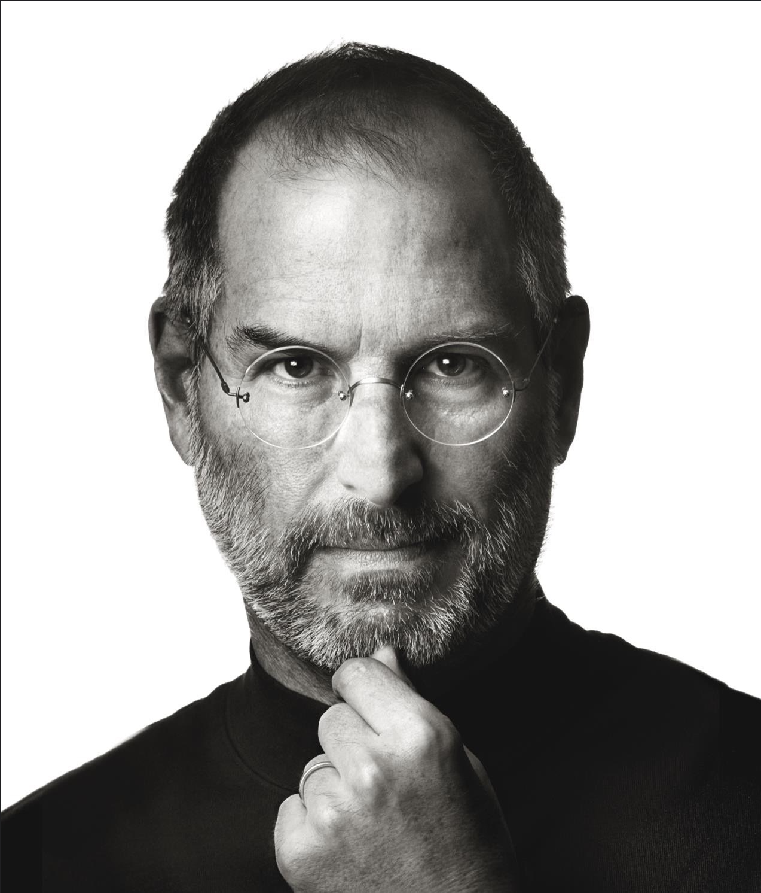

My Resume

Summary
Senior Technical Artist with over +7 years of experience driving innovation in the media and
utomotive industries. Specializes in Agile development, resource management, and creating engaging 3D
and interactive experiences that enhance user engagement. Passionate about leveraging cutting-edge technologies
to propel digital artistry forward, delivering high-quality projects for luxury brands
and next-generation vehicles.
Education
Interactive Media Design
Seneca college, Canada
Bachelors Degree in Digital Media
Annamalai University, India
Work Experience
Senior Technical Aritst - Ford Motors, Canada
- Created efficient pipelines between UX/UI, 3D design, and development teams, reducing delivery time by 25%.
- Facilitated agile development for over 7 next-generation vehicles, ensuring timely project milestones.
- Managed and allocated resources for a team of 15+, optimizing productivity and maintaining project timelines.
- Implemented interactive 2D & 3D vehicle avatars, boosting user engagement by 30%.
- Built foundation for using Unreal Engine & other PBR engines while co-ordinating with Epic games and Google Automotive Teams.
-
Intermediate Technical Artist - Threekit, Canada
- Managed web implementation of complex product configurators for luxury brands like Louis Vuitton, Dior, and Berluti, delivering 50+ interactive experiences across North America and the UK.
- Coordinated with global partners and clients, conducting 30+ visual quality workshops to ensure brand alignment and project objectives.
- Developed project plans and resource strategies, improving delivery times by 20%.
- Implemented interactive 2D & 3D vehicle avatars, boosting user engagement by 30%.
- Trained 15+ partners on the Threekit 3D platform, resolved 100+ bugs through UAT, and enhanced platform functionality.
-
Asset Artist - Pixomondo, Canada
- Created high-quality 3D models from concepts and images for TV series and movies, ensuring alignment with project specifications and client expectations.
- Developed realistic textures and shaders, maintaining high standards of visual fidelity and consistency across all assets.
- Collaborated with teams to deliver detailed and accurate 3D & 2D assets.
Skills
- Autodesk 3D
- Unreal Engine
- Adobe Creative Suite
- AR/VR
- UI/UX
- Real-time Rendering
Awards and certifications
- PMP
- AI Foundation - IBM
- WES
Contact me
Hobbies & Interests